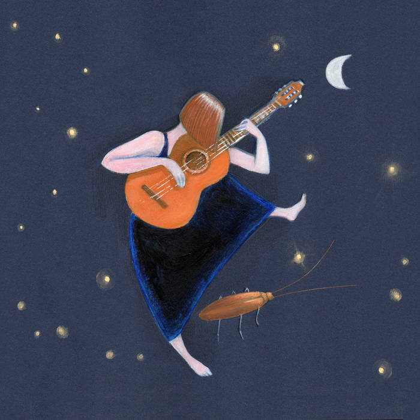

National Sawdust
Brooklyn, NY
The Cockroach Diary
Album art by Manuela Simoncelli
"A genre-defying act of storytelling."
Fanfare Magazine
"This is top-shelf talent, execution, creativity, and boldness on display."
The Royal Editorial
Nicoletta Todesco is an Italian guitarist, composer, conductor, and singer. Through storytelling and composition, she looks for new ways to exalt the instrument and its relationship with the player, moving between original works, early music, and arrangements for both classical and electric guitar.
Her debut album, The Cockroach Diary (2025), is a song cycle of original compositions for voice and guitar (classical and electric), engineered by Grammy-nominated Jennifer Nulsen. The album is an exploration of artistic ambition, loneliness, and the creative impulse, unfolding over a night of imaginary conversation with a Periplaneta americana living in the crevices of the artist’s subconscious. Fanfare Magazine called it “a genre-defying act of storytelling.”
Niki, as her friends call her, left home at 14 to study at the Conservatory of Trento, where she emerged as a talented young guitarist with awards at national and international competitions. She went on to the Regondi Academy in Milan and completed a Master’s in guitar performance at the Conservatory of Bologna. In 2017, seeking her own voice as a composer and performer, she moved to the United States to study under Benjamin Verdery at the Yale School of Music. At Yale, she was awarded the Eliot Fisk prize, recognized to an outstanding guitarist whose artistic achievement and dedication have contributed greatly to the department.
Nicoletta has been an invited artist at the Long Island Guitar Festival, the New York Guitar Seminar, Sydney Guitar Festival and Taranaki Guitar Festival, among others, and performed in solo recitals across the United States, Italy, Mexico, Australia, and New Zealand. She is a founding member of the Italian contemporary music collective 0crediti, and has performed with NOVUS NY, Trinity Church Wall Street’s contemporary orchestra, and with Heartbeat Opera, including its production of Lady M, which the New York Times called “flat-out brilliant.” She also plays in a duo with flutist Laura Elena Gracia Guzmán and in a trio with soprano Emily Donato and flutist Helen Park.
Nicoletta holds a Master’s in musicology from the University of Bologna, with a research internship at CENIDIM in Mexico City. She has taught at institutions in both Italy and the U.S., and as a guitar instructor and composer has contributed to publications for Classical Guitar Academy, where she served as production manager and continues to teach. Her composition for four guitars, Picking Berries in the Haunted Forest, won first prize at the 2022 Austin Classical Guitar Composition Competition.
Nicoletta is the director of the New York City Guitar Orchestra and artist liaison at Augustine Strings. She lives in Brooklyn, NY.

An intimate and explosive experience exploring loneliness, creativity, and transformation through classical and electric guitar, poetry and singing.
Engineered by Grammy-nominated Jennifer Nulsen. Artwork by Manuela Simoncelli. Released May 2025.
Click a track to read the lyrics
Where are you going, little cockroach?
You were smelling crumbs in a forsaken shadow
just a few seconds ago —
I believe.
You were regal, shaking your antennae
like quivering branches,
like a god of incomprehensible language —
I remember.
You know, in this swinging balance,
every shadow turns to light
when the sun comes kissing and the darkness lies —
I transform.
Do you die, little cockroach, every time you change?
Sing for me softly the memories of your pain —
I listen.
But you want to smell instead
crumbs and scraps,
the frugal bequest of your human friend —
I understand.
Take it, then — I keep the pleasure, you take the rest.
And while you follow that shadow,
do you mind if I stay here and dance?
The Moon is a Sun for dreamers
And I want to fall asleep
A gentle song of Water
Will melt your fears in tears
Sing my heart but louder
Send your chant away
The Air a faithful vessel
Will lead your red lament
Feel the Fire below the skin
Let it shine
Hot is love and hot is drive
And I want to feel alive
Rest my soul surrender
in the soft and humid ground
the Earth is so abundant
If watered with your tears
Time is fake like the need of a company
Anxiety is bullshit that feels so surreal
If something is touchable is the smell of your armpit
The weariness of feet
and the patterns of genes
I abandoned defenses on a pool made of rye
If life has a meaning it is certainly beige
like the barley if it's windy and sand during night
like the bile that you vomit and a ring you hold tight
I just stopped the time while the time keeps on moving
Is it joke or some magic, is it glitch or caprice?
I hold on to my corner and my delicious drink
while the world keeps on running and therefore
I exist
I see a dark wide lake of ink
Inside I see a monster
What would that be?
I see the sky purple and green
And I wonder if it will be
And I see a fox behind an elm tree
She wants to swim and smiles
Why would that be?
And I see a giant drop of black
And I wonder: will it hit me?
And I want to run away
Why don't you come?
We could look for heavens
In the world you see
And run run run, run away
And run run run, run away
And run run run, run away
And I see we can fly
'Cause there's no should with feelings
Don't be afraid my soul
In this chasing game
And run, and run, and run until I forget to breath
And I see the fox licking my scars
I will stay a minute
Close my eyes
And tell me what you see
I can't tell
the flower from the seed
I can't tell
the meaning from the thought
And I am lost in foreign territories
I am lost in foreign territories
I am lost in foreign territories
Feed me a story feed me a story
What is this? Where am I?
I am the princess of nowhere
find me in the garden of loneliness
one soul for apples
two souls for cream
and I own your dreams
I am the queen of your boredom
my dragons eat every lost cause
don't panic, manic, and count until three
and I own your dreams
I need to get out of here
like a river
please let me out
I want to go now
I need to go
What's that worry on your eyelids
what's behind the curtain of your sunny room
where did you lock your secret dreams?
Perhaps they're buried in the rose garden near the walnut tree
Opportunities what a strange word
grow on a cherry tomato plant
did you taste it did you taste it
did you taste the freedom of your desires?
Did you taste it did you taste it
did you taste the forbidden fruit?
la la la
Tell me the wonders of your neurons
tell me the measure of your love
what is that color on your shoulder?
It seems to paint of an old thought
it seems to paint of an old thought,
don't let it dry
And chances are some fancy lies
you get what you're thirsty roots scream
what are the odds what are the odds
what are the odds that you find that lonely lost sock?
What are the odds what are the odds
what are the odds that your heart will beat on time this time?
And scream where are your dreams
Scream where are your dreams
Scream where are your dreams
Help
Can you get me out of here?
Stuck
I cannot move
Stuck
I cannot move
Where am I in my head?
Stuck
I cannot move
Can you get me out?
I cannot move I cannot
Boom boom boom
Conspiracy against us is everywhere
Conspiracy the air is poisonous without you
is poisonous without you
is poisonous without you
Conspiracy I hear it it's calling us
conspiracy the ground is boiling and I feel it
is boiling and I feel it
is boiling and I feel it
What is happening to my energy?
Dissolving into my delusions
What is happening to the world around me
melting a thousand degrees
My heart is exploding like a dying star
boom boom boom
We made a mess little cockroach did you hear the explosion? So loud! How do we fix it? Where do we go? We
are lost in this universe, floating around without direction.
It's so quiet here, so silent. It's so quiet I can even hear my heartbeat. Boom boom boom
Everything we had is shattered, we are lost in a universe of useless crumbs. What do we do now? Where do we
go?
Wait do you see? What's that? Is that a wolf?
What did you say? A coyote? What the heck! Why is a coyote riding a comet in this storm of crumbs?
Float faster little cockroach we need to go ask for directions
Where are you going coyote?
I see your eyes I feel you
Where are you going?
Riding your comet alone
Where are you going?
It's freezing outside here
a rain of debris expanding
like a gentle promise of tomorrow
But where are you going? Where are you going?
I can't touch you are too far away
So let's dance in the void so slowly
that our thoughts can meet our heartbeat
let the gravity blow gently a song of now
Let the distance be our secret
I see atoms all around me
I will build a bridge of stories for you to come here
la la la
Gira la giostra gira la giostra gira e non si fermerà
gira la testa gira gira gira
Gira la giostra gira la giostra gira e non si fermerà
gira la giostra gira la giostra gira e non si fermerà
Danzano i tuoi sospiri sono sorrisi che ti sollevano
corrono le stagioni ci sono tuoni che spaventano
Gira la giostra gira la giostra e questa volta io scenderò
gira la giostra gira e questa volta io scenderò
Voglio sentir l’odore di un nuovo fiore color di cenere
voglio fuggir la sera che senza tregua mi abbraccerà
Gira la giostra gira ma quasi quasi io resterò
gira la giostra gira ma quasi quasi io resterò
sento un brezza amica canzone antica odor di nuvole
dopo l'inverno arriva come onda a riva la rondine
In the end, we always go back to where we started just a little bit better than before
Fermati adesso e calma il tuo battito
ascolta quel suono lontano
gira la giostra e un canto ti chiama
e cambiando rinasco e nascendo suono
Vola la polvere
bagno la cenere
accetto l'oscurità
e vivo
E chi vuol esser lieto sia
del doman non v'è certezza
Brooklyn, NY
New York, NY
For bookings, collaborations, press inquiries, or lessons.